created by xyzko1
2019年06月23日 19:00:00
Quartz.NET介绍
Quartz.NET是一个强大、开源、轻量的作业调度框架，是 OpenSymphony 的 Quartz API 的.NET移植，用C#改写，可用于winform和asp.net应用中。它灵活而不复杂。你能够用它来为执行一个作业而创建简单的或复杂的作业调度。它有很多特征，如：数据库支持，集群，插件，支持cron-like表达式等等。
通俗说它的功能是：比如说我想每天晚上2点让程序或网站执行某些代码，或者每隔5秒种我想查看是否有新的任务要处理等。
官网：http://www.quartz-scheduler.net/
源码：https://github.com/quartznet/quartznet
示例：http://www.quartz-scheduler.net/documentation/quartz-2.x/quick-start.html
其实Quartz是一个完全由java编写的开源作业调度框架，Quartz是OpenSymphony开源组织在Job scheduling领域又一个开源项目，它可以与J2EE与J2SE应用程序相结合也可以单独使用。Quartz可以用来创建简单或为运行十个，百个，甚至是好几万个Jobs这样复杂的程序。而Quartz.Net与NPOI一样是一个DoNet平台下的对应版本。如果您使用Java直接访问这里就好了http://www.quartz-scheduler.org/
依赖框架
引入框架的方法非常简单你可以直接用nuget管理包也可以在项目中添加引用：
创建一个项目
创建一个新项目，可以是ASP.NET MVC,WebForms,Winforms等多种.Net项目，这里使用的是VS2013，创建了一个MVC项目：
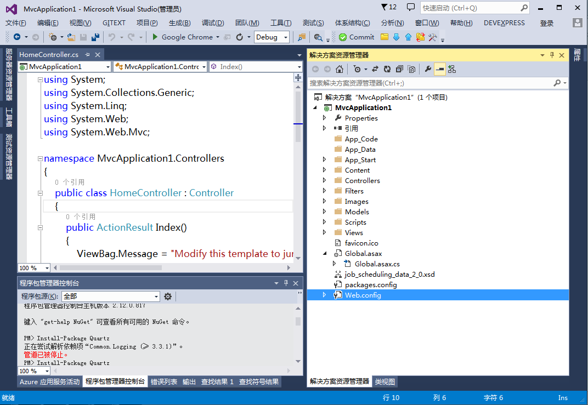
安装Nuget
新版本的Visual Studio默认情况是安装了Nuget的，如Visual Studio2015，但如果没有安装，打开VS菜单“工具”->"扩展与更新"
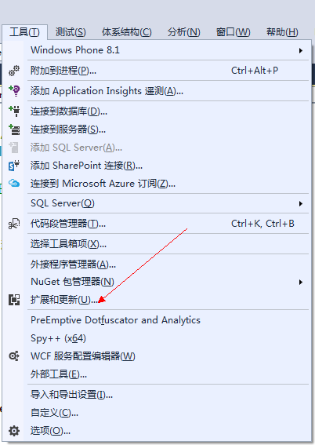
在扩展与更新中搜索“nuget”，可以新安装或卸载后升级：
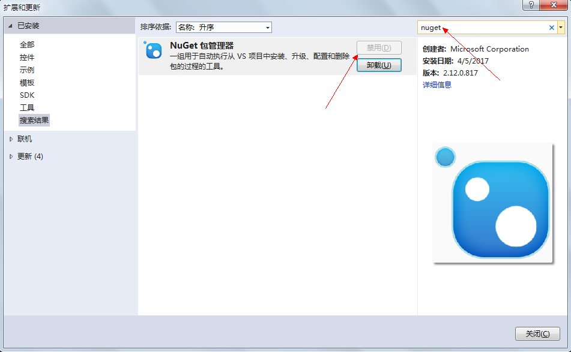
修改Nuget镜像
为解决国内访问NuGet服务器速度不稳定的问题建议你最好选择一些镜像服务器，这样可以加速下载。
在Visual Studio中的添加方法是：打开“工具”->“选项”菜单
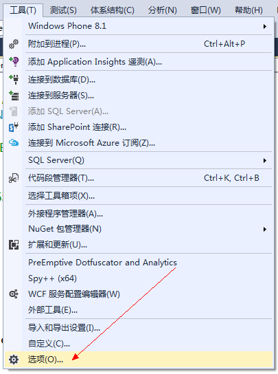
在左侧菜单中找到“NuGet包管理器”
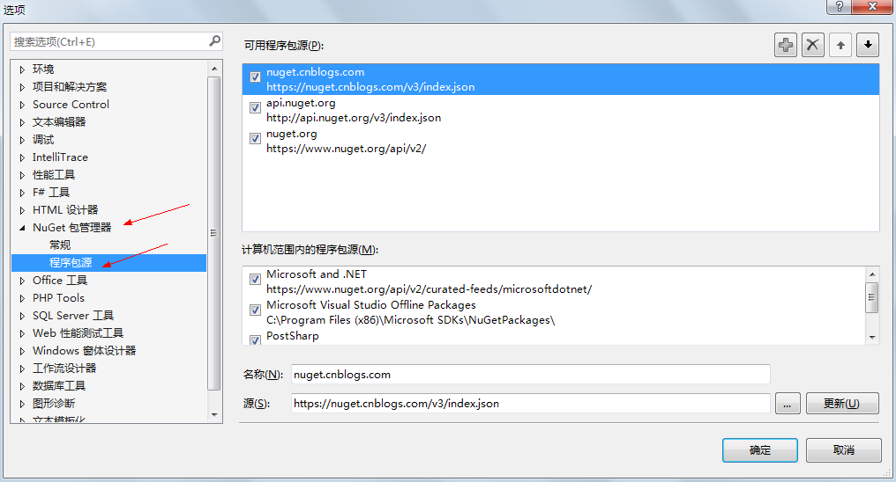
点击右上角的加号，添加两个镜像，这些地址可以上网搜索，我使用的是如下两个：
https://nuget.cnblogs.com/v3/index.json
http://api.nuget.org/v3/index.json
设置一下顺序就OK了。
点击“工具”->“NuGet包管理器”->“程序包管理器控制台”
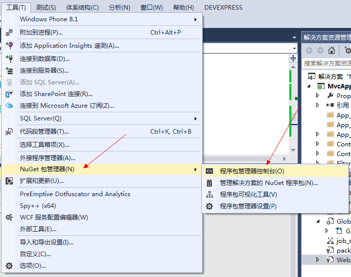
输入安装包的命令：
Install-Package Quartz
安装结果如下：
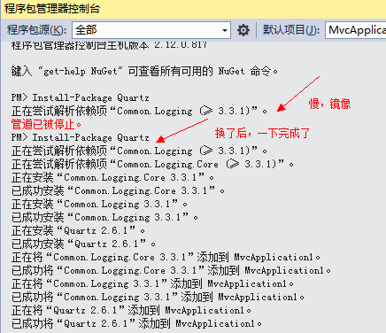
此时包管理器中就下载了需要的程序集与相关文件，程序中也添加了引用。
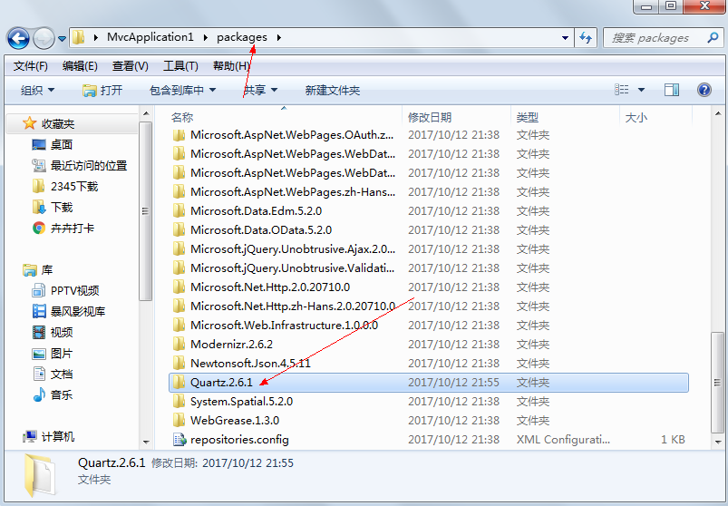
手动引用
当然如果您不愿意使用nuget也可以下载到Quartz后直接引用，可以在本文尾部下载到框架。
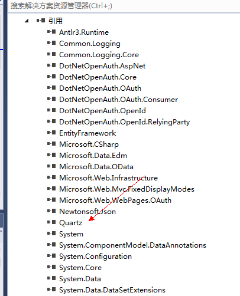
框架下载地址：链接: https://pan.baidu.com/s/1slDM5JJ 密码: 9x5m
应用框架
假定我现在想当前的MVC应用每隔5秒钟向C:\Quartz.txt文件中记录当前时间。
因为这是一个Web应用，我想网站一启动时就开始该项工作，这里我们需要打开Global.asax，将代码写在Application_Start方法中
定义要执行的任务
定义一个类，实现Quartz.IJob接口，实现方法Execute，TimeJob.cs文件的代码如下：
1 | using Quartz; |
创建一个调度器
调度器负责管理与控制任务的执行，在Global.asax文件的Application_Start方法中添加如下代码：
1 | //调度器 |
创建一个任务对象
这个任务对象就是我们将要执行的工作，job1是名称，group1是组名。
1 | //2、创建一个任务 |
创建一个触发器
触发器定义了什么时间任务开始或每隔多久执行一次。
1 | //3、创建一个触发器 |
将任务与触发器添加到调度器中并执行
触发器定义了什么时间任务开始或每隔多久执行一次。
1 | //4、将任务与触发器添加到调度器中 |
应用关闭时结束任务
当网站关闭时结束正在执行的工作，在Global.asax中的Application_End方法中添加如下代码：
1 | protected void Application_End(object sender, EventArgs e) |
shutdown方法中的参数true的意思为：是否等待任务的完成再结束。
运行结果
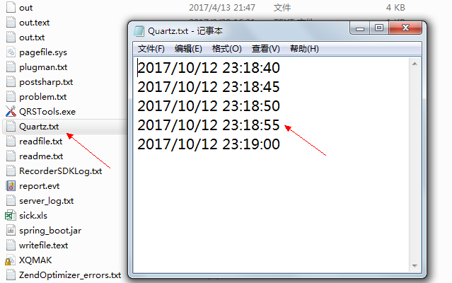
Global.asax中的完整代码
1 | using Quartz; |
框架说明
看官方的示例、源码或帮助文档可以了解更多的使用方法，官方帮助的地址是：https://www.quartz-scheduler.net/documentation/index.html
Quartz的cron表达式
cron表达式就是用于设定时间的一个字符串，在前面的代码中我们就用到了，如下所示：
1 | //3、创建一个触发器 |
官方英文介绍：http://www.quartz-scheduler.net/documentation/quartz-2.x/tutorial/crontrigger.html
cron expressions 整体上还是非常容易理解的，只有一点需要注意："?"号的用法，看下文可以知道“？”可以用在 day of month 和 day of week中，他主要是为了解决如下场景，如：每月的1号的每小时的31分钟，正确的表达式是：* 31 * 1 * ？，而不能是：* 31 * 1 * *，因为这样代表每周的任意一天。
1 | 由7段构成：秒 分 时 日 月 星期 年（可选） |
官方示例：
| 表达式 | 解释 |
|---|---|
| 0 0 12 * * ? | 每天中午12点触发 |
| 0 15 10 ? * * | 每天上午10:15触发 |
| 0 15 10 * * ? | 每天上午10:15触发 |
| 0 15 10 * * ? * | 每天上午10:15触发 |
| 0 15 10 * * ? 2005 2005 | 年的每天上午10:15触发 |
| 0 * 14 * * ? | 在每天下午2点到下午2:59期间的每1分钟触发 |
| 0 0/5 14 * * ? | 在每天下午2点到下午2:55期间的每5分钟触发 |
| 0 0/5 14,18 * * ? | 在每天下午2点到2:55期间和下午6点到6:55期间的每5分钟触发 |
| 0 0-5 14 * * ? | 在每天下午2点到下午2:05期间的每1分钟触发 |
| 0 10,44 14 ? 3 WED | 每年三月的星期三的下午2:10和2:44触发 |
| 0 15 10 ? * MON-FRI | 周一至周五的上午10:15触发 |
| 0 15 10 15 * ? | 每月15日上午10:15触发 |
| 0 15 10 L * ? | 每月最后一日的上午10:15触发 |
| 0 15 10 L-2 * ? | 每个月的第二天到最后一天的上午10:15触发 |
| 0 15 10 ? * 6L | 每月的最后一个星期五上午10:15触发 |
| 0 15 10 ? * 6L | 每个月最后一个星期五上午10时15分触发 |
| 0 15 10 ? * 6L 2002-2005 | 2002年至2005年的每月的最后一个星期五上午10:15触发 |
| 0 15 10 ? * 6#3 | 每月的第三个星期五上午10:15触发 |
| 0 0 12 1/5 * ? | 每月每隔5天下午12点（中午）触发, 从每月的第一天开始 |
| 0 11 11 11 11 ? | 每11月11日上午11时11分触发 |
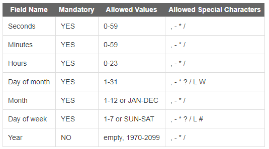
其它帮助
请查看帮助文档、示例或上网搜索，：），后面有空再补充吧
IIS应用程序池自动回收问题的有效解决办法
IIS可以设置定时自动回收，默认回收是1740分钟，也就是29小时。IIS自动回收相当于服务器IIS重启，应用程序池内存清空，所有数据被清除，相当于IIS重启，在度量快速开发平台服务器端，为了减小数据库负担，内存中暂存了很多信息，不适合频繁的回收，因为回收会造成服务器端所有存在内存中的数据丢失，如果没有及时保存到数据库中，可能导致程序出现问题。而如果系统使用高峰时期，并不适合回收，回收可能导致几十秒IIS无响应，对于正在工作的人员来说，是一种很不好的体验，会以为是网络或者掉线等问题。
如果IIS重启则Global.asax中的方法将被再次执行，如果不想IIS自动重启可以使用如下的设置：
IIS应用程序池回收，找到相应的应用程序池并点击高级设置，就可以看到回收的相关设置
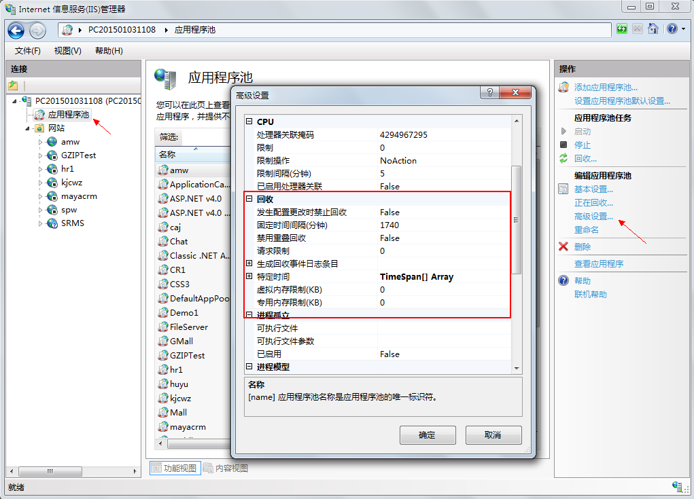
发生配置更改时禁止回收：如果为True,应用程序池在发生配置更改时将不会回收。
固定时间间隔（分钟）：超过设置的时间后，应用程序池回收，为0意味着应用程序池不会按固定间隔回收。系统默认设置的时间是1740（29小时）。
禁用重叠回收：如果为true，将发生应用程序池回收，以便在创建另一个工作进程之前退出现有工作进程。
请求限制：应用程序池在回收之前可以处理的最大请求数。如果值为0，则表示应用程序池可以处理的请求数没有限制。
生成回收事件日志条目：每发生一次指定的回收事件时便产生一个事件日志条目。
更多参考：http://www.cnblogs.com/Fishwood/p/3602041.html
总结
1、实现定时任务的方法有很多，如果非常简单的话直接使用系统内置的Timer，Scheduler，Cache都是可以达到的，但要注意GC回收的问题，一般会定义成静态的。
2、本文只是非常粗浅的介绍了一下零配置的方法，您也可以选择使用XML配置的方式替代部分的硬编码。
Please Star this Project if you like it! Follow would also be appreciated!
Peace!